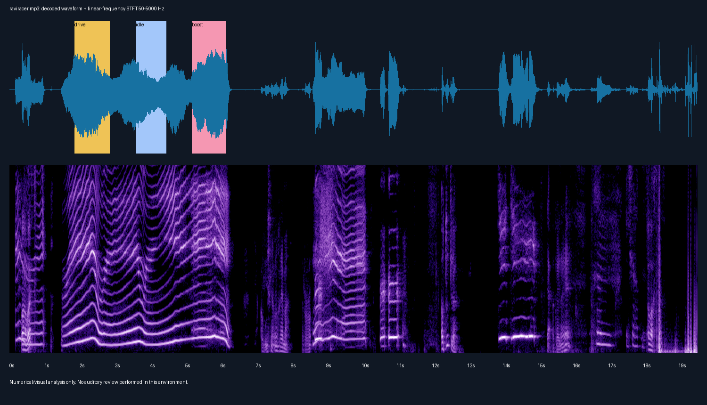

Dit Python-commando maakt de afgeleide WAV-bestanden en deze offline audiovoorbeelden opnieuw. Een grafische Godot-sessie is daarvoor niet nodig; het bronbestand blijft behouden.
Deze audiovoorbeelden opnieuw maken
python3 /home/anton/Documents/sites/boracart/game/tools/build_vehicle_audio.pyBronbestand ongewijzigd. Drie gefilterde bronfragmenten met vloeiende loopovergangen. Dit zijn vooraf gemaakte audiovoorbeelden, geen geluidsopname uit de game. Technisch gecontroleerd; nog geen gehoorreview door een mens.
Herhaald afspelen staat aan; browserovergangen zijn niet de sample-nauwkeurige Godot-loop.
Herhaald afspelen staat aan; browserovergangen zijn niet de sample-nauwkeurige Godot-loop.
Herhaald afspelen staat aan; browserovergangen zijn niet de sample-nauwkeurige Godot-loop.
